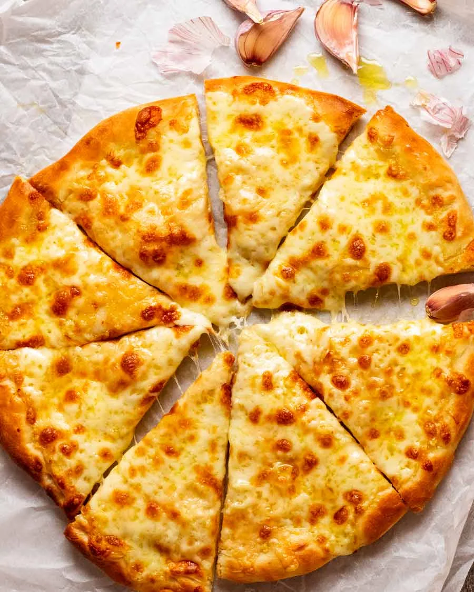

Pizza

Description
Pizza is a popular Italian dish made with a round, flat dough topped with tomato sauce, melted cheese, and various toppings. It is baked until the crust becomes golden and crispy, creating a delicious combination of crunchy dough, savory sauce, and gooey cheese.
Ingredients
- Pizza dough
- Tomato sauce
- Mozzarella cheese
- Pepperoni
- Onion
- Bell peppers
- Mushrooms
- Olive oil
- Salt
- Italian seasoning
- Preheat the oven to 220°C (425°F).
- Roll out the pizza dough into a round shape.
- Spread tomato sauce evenly over the dough.
- Sprinkle mozzarella cheese over the sauce.
- Add pepperoni, onions, bell peppers, and mushrooms.
- Drizzle a little olive oil and sprinkle Italian seasoning.
- Bake for 12–15 minutes until the crust is golden and the cheese melts.
- Remove from the oven, slice, and serve hot.
Home